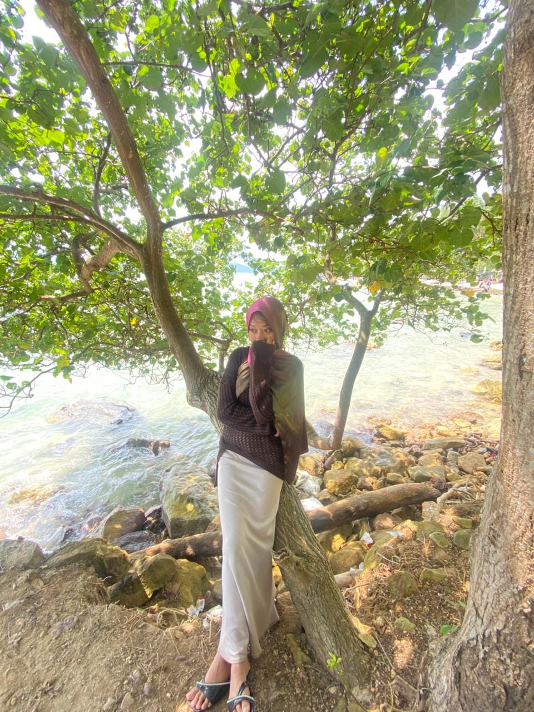
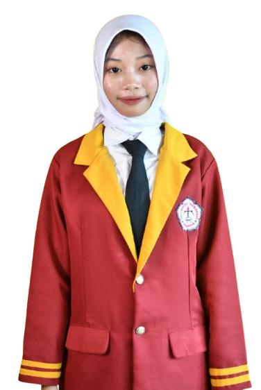
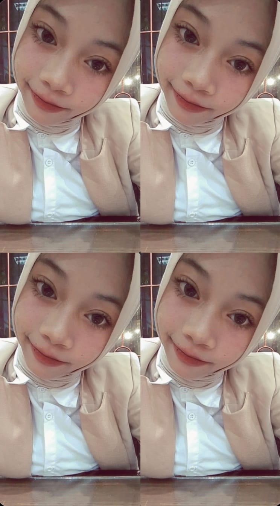
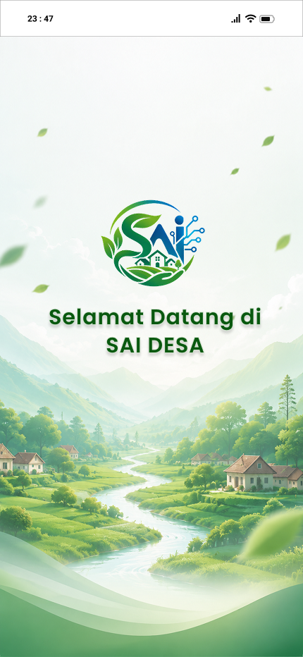
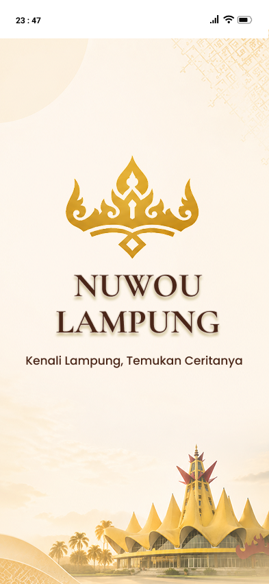

Halo, Saya Nabila 👋
Creating Intuitive & Delightful UI/UX Experiences
Saya adalah seorang UI/UX & Product Designer berdedikasi yang mengubah gagasan kompleks menjadi antarmuka digital yang bersih, modern, dan mudah digunakan. Berfokus pada riset pengguna, visual hi-fi, wireframing, dan prototipe interaktif.



Data Diri & Filosofi Desain
Saya adalah mahasiswa Semester 5 dari program studi sistem informasi dengan minat mendalam pada disiplin User Interface (UI) dan User Experience (UX) Design. Bagi saya, desain antarmuka bukan sekadar estetika visual, melainkan jembatan komunikasi antara empati kebutuhan pengguna dan tujuan bisnis.
Dengan latar belakang pemahaman struktur web (HTML/CSS) serta penguasaan tools desain terdepan seperti Figma, saya mampu merancang arsitektur informasi yang terstruktur, wireframe yang adaptif, hingga prototipe hi-fi interaktif.
User Research & Persona
Menggali problem pengguna melalui user interview, journey map, dan usability testing.
Wireframing & IA
Menyusun Wireframe low-fidelity & Arsitektur Informasi yang jelas dan terstruktur.
High-Fidelity UI Design
Menciptakan antarmuka yang visualnya memukau dengan sistem warna, tipografi, dan layout konsisten.
Design System & Components
Membangun komponen UI reusable, Figma auto-layout, serta dokumentasi token desain.
Alur Kerja UI/UX (Design Process)
Empathize & Research
Memahami masalah pengguna, melakukan wawancara, serta menganalisis kompetitor.
Wireframe & Concept
Membuat konsep sketsa awal, user flow, dan wireframe low-fidelity tanpa distraksi warna.
Hi-Fi UI & Prototyping
Merealisasikan visual modern, micro-interactions, dan prototipe interaktif di Figma.
Testing & Handoff
Uji keterpakaian (Usability Test) dengan pengguna nyata dan siapkan asset handoff ke developer.
Pengalaman Desain UI/UX
Kumpulan proyek studi kasus UI/UX, aplikasi mobile, web dashboard, dan design system yang telah saya rancang.

Aplikasi Sistem Administrasi & Informasi Desa (SAI DESA)
Aplikasi Sistem Informasi Desa (SID) dirancang untuk mengelola data kependudukan secara efisien, mempercepat layanan administrasi surat-menyurat publik, serta mewujudkan transparansi informasi terpadu di tingkat desa.
Lihat Prototipe di Figma
NuwoU Lampung — Platform Kebudayaan & Pariwisata
Platform digital interaktif yang dirancang khusus untuk mempromosikan kekayaan kebudayaan dan pariwisata Provinsi Lampung. Berfungsi sebagai panduan informasi destinasi, galeri visual adat, dan direktori wisata unggulan.
Lihat Prototipe di FigmaPendidikan
Riwayat pendidikan formal dari jenjang sekolah menengah hingga perguruan tinggi.
S1 Sistem Informasi
Universitas Teknokrat Indonesia
Berfokus pada pengembangan sistem informasi, analisis kebutuhan sistem, Interaksi Manusia dan Komputer (HCI), arsitektur informasi, serta perancangan antarmuka pengguna (UI/UX).
Sekolah Menengah Atas (SMA)
SMAN 1 Padang Cermin
Menyelesaikan pendidikan menengah atas dengan baik, membangun fondasi akademik yang kuat, serta aktif dalam kegiatan ekstrakurikuler dan organisasi sekolah.
Keahlian & Perangkat Desain
Peralatan dan metodologi yang saya gunakan untuk menciptakan solusi digital yang handal.
UX Research & Strategy
UI & Visual Design
Frontend UI Code
Tools & Software Favorit Saya
Punya Proyek UI/UX atau Ide Produk Digital?
Saya selalu terbuka untuk berdiskusi tentang peluang proyek UI/UX, kolaborasi redesain aplikasi, maupun tawaran posisi kerja. Hubungi saya secara langsung melalui Email atau GitHub di bawah ini!